2. Crea el proyecto
Selecciona "Navigation Drawer Activity" como plantilla para la activity principal.
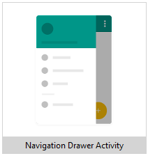
Elimina el Boilerplate generado por el asistente:
- Elimina el package
ui :
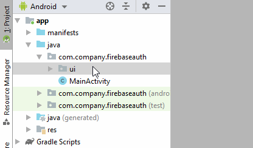 - Borra las Top-Level destinations del fichero
MainActivity.java :
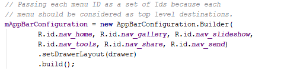 - Borra los archivos de layout de los fragments:
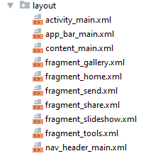 - Borra todos los
item del ficheromenu/activity_main_drawer.xml - Borra todos los fragment del fichero
navigation/mobile_navigation.xml
Borra tambien el atributoapp:startDestination="@+id/nav_home"
Connecta la app a Firebase
- Selecciona
Herramientas >Firebase para abrir la ventana del Asistente. - Haz clic en Authentication, y luego en "Email and password authentication".
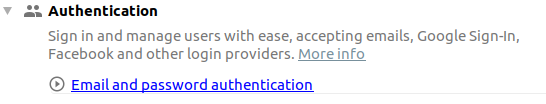
- Haz clic en "Connect to Firebase"
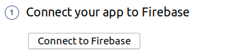
Selecciona una cuenta de Google y haz click en
En la ventana que aparece selecciona un proyecto existente o crea uno nuevo. Haz click en "Connect to Firebase"
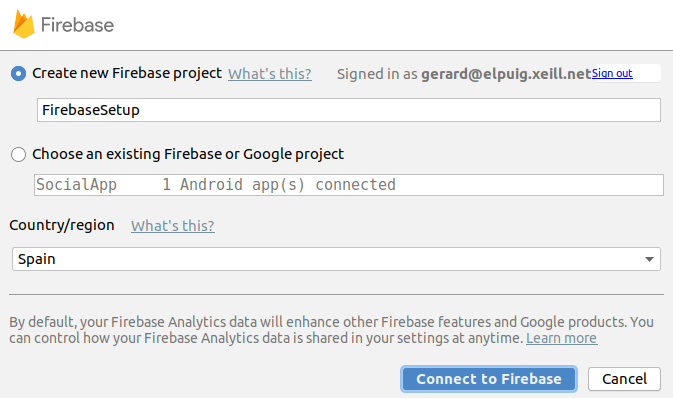
Añade la Autenticacion con Firebase
- Haz clic en "Add Firebase Authentication to your app"
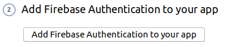
Haz clic en "Accept changes"
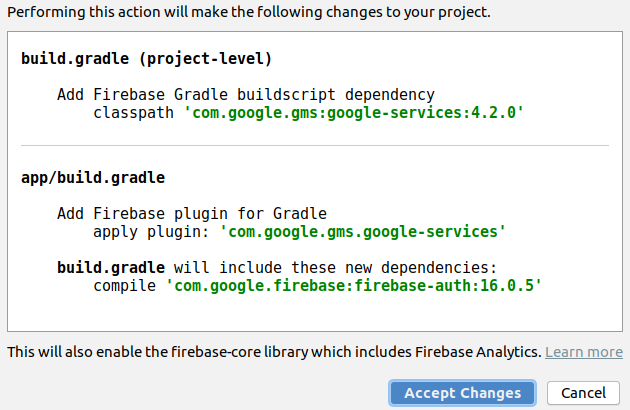
- Ve a la Consola de Firebase: https://console.firebase.google.com
Accede al proyecto
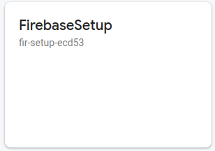
- Ve al apartado "Authentication"
- Haz clic en "Setup sign-in method"
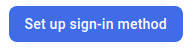 - Activa "Email/Password" y "Google"
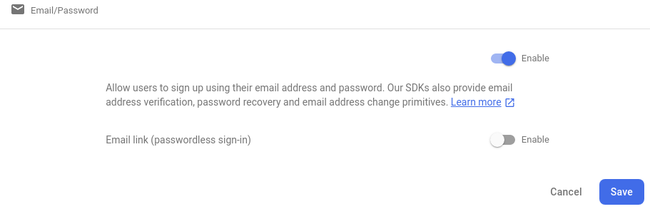
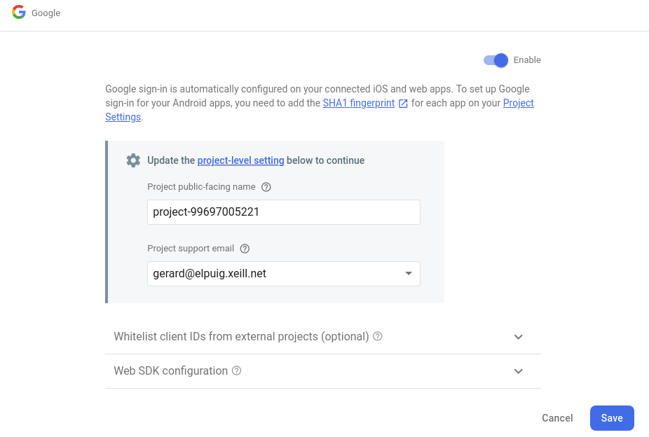 - Añade la siguiente dependencia en el archivo
build.gradle (Module: app)
implementation 'com.google.android.gms:play-services-auth:17.0.0'
Las dependencias del fichero build.gradle (Module: app) deberían quedar así:
implementation fileTree(dir: 'libs', include: ['*.jar']) implementation 'androidx.appcompat:appcompat:1.1.0' implementation 'androidx.legacy:legacy-support-v4:1.0.0' implementation 'com.google.android.material:material:1.0.0' implementation 'androidx.constraintlayout:constraintlayout:1.1.3' implementation 'androidx.navigation:navigation-fragment:2.1.0' implementation 'androidx.navigation:navigation-ui:2.1.0' implementation 'androidx.lifecycle:lifecycle-extensions:2.1.0' implementation 'com.google.firebase:firebase-auth:19.2.0' testImplementation 'junit:junit:4.12' androidTestImplementation 'androidx.test.ext:junit:1.1.1' androidTestImplementation 'androidx.test.espresso:espresso-core:3.2.0' implementation 'com.google.android.gms:play-services-auth:17.0.0'
3. Diseño de la Interfaz de Usuario
Destinaciones:
SignInFragment, SignOutFragment, RegisterFragment, ProfileFragment y HomeFragment
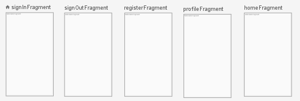
Archivos de Layout:
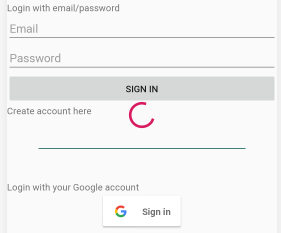
<?xml version="1.0" encoding="utf-8"?> <androidx.constraintlayout.widget.ConstraintLayout xmlns:android="http://schemas.android.com/apk/res/android" xmlns:app="http://schemas.android.com/apk/res-auto" android:layout_width="match_parent" android:layout_height="match_parent"> <LinearLayout android:layout_width="match_parent" android:layout_height="wrap_content" android:orientation="vertical" app:layout_constraintBottom_toBottomOf="parent" app:layout_constraintEnd_toEndOf="parent" app:layout_constraintStart_toStartOf="parent" app:layout_constraintTop_toTopOf="parent" android:gravity="center_vertical|center_horizontal" android:id="@+id/signInForm"> <TextView android:layout_width="match_parent" android:layout_height="wrap_content" android:text="Login with email/password"/> <EditText android:id="@+id/emailEditText" android:layout_width="match_parent" android:layout_height="wrap_content" android:hint="Email"/> <EditText android:id="@+id/passwordEditText" android:layout_width="match_parent" android:layout_height="wrap_content" android:hint="Password"/> <Button android:id="@+id/emailSignInButton" android:layout_width="match_parent" android:layout_height="wrap_content" android:text="Sign In"/> <TextView android:id="@+id/gotoCreateAccountTextView" android:layout_width="match_parent" android:layout_height="wrap_content" android:text="Create account here"/> <View android:layout_width="match_parent" android:layout_height="1dp" android:layout_margin="48dp" android:background="@color/colorPrimaryDark"/> <TextView android:layout_width="match_parent" android:layout_height="wrap_content" android:text="Login with your Google account"/> <com.google.android.gms.common.SignInButton android:id="@+id/googleSignInButton" android:layout_width="wrap_content" android:layout_height="wrap_content"/> </LinearLayout> <ProgressBar android:id="@+id/signInProgressBar" android:layout_width="wrap_content" android:layout_height="wrap_content" app:layout_constraintBottom_toBottomOf="parent" app:layout_constraintEnd_toEndOf="parent" app:layout_constraintStart_toStartOf="parent" app:layout_constraintTop_toTopOf="parent" /> </androidx.constraintlayout.widget.ConstraintLayout>
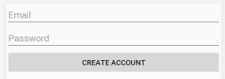
<?xml version="1.0" encoding="utf-8"?> <LinearLayout xmlns:android="http://schemas.android.com/apk/res/android" xmlns:tools="http://schemas.android.com/tools" android:layout_width="match_parent" android:layout_height="match_parent" tools:context=".RegisterFragment" android:orientation="vertical"> <EditText android:id="@+id/emailEditText" android:layout_width="match_parent" android:layout_height="wrap_content" android:hint="Email"/> <EditText android:id="@+id/passwordEditText" android:layout_width="match_parent" android:layout_height="wrap_content" android:hint="Password"/> <Button android:id="@+id/registerButton" android:layout_width="match_parent" android:layout_height="wrap_content" android:text="Create account"/> </LinearLayout>
<?xml version="1.0" encoding="utf-8"?> <LinearLayout xmlns:android="http://schemas.android.com/apk/res/android" android:layout_width="match_parent" android:layout_height="match_parent" android:orientation="vertical"> <ImageView android:id="@+id/photoImageView" android:layout_width="254dp" android:layout_height="wrap_content"/> <TextView android:id="@+id/displayNameTextView" android:layout_width="match_parent" android:layout_height="wrap_content"/> <TextView android:id="@+id/emailTextView" android:layout_width="match_parent" android:layout_height="wrap_content" /> </LinearLayout>
Menu drawer:
<?xml version="1.0" encoding="utf-8"?> <menu xmlns:android="http://schemas.android.com/apk/res/android" xmlns:tools="http://schemas.android.com/tools" tools:showIn="navigation_view"> <group android:checkableBehavior="single"> <item android:id="@+id/homeFragment" android:title="Home" /> <item android:id="@+id/profileFragment" android:title="Perfil" /> <item android:id="@+id/signOutFragment" android:title="Cerrar sesion" /> </group> </menu>
4. Navegación
Añadir el NavController en cada fragment:
public class XXXXXXFragment extends Fragment { NavController navController; // <----------------- public XXXXXXFragment() {} @Override public View onCreateView(LayoutInflater inflater, ViewGroup container, Bundle savedInstanceState) { return inflater.inflate(R.layout.fragment_XXXXXX, container, false); } @Override public void onViewCreated(@NonNull View view, @Nullable Bundle savedInstanceState) { super.onViewCreated(view, savedInstanceState); navController = Navigation.findNavController(view); // <----------------- } }
Hacer que el enlace a "Create account here" lleve al RegisterFragment
public class SignInFragment extends Fragment { NavController navController; // ... @Override public void onViewCreated(@NonNull View view, @Nullable Bundle savedInstanceState) { super.onViewCreated(view, savedInstanceState); navController = Navigation.findNavController(view); view.findViewById(R.id.gotoCreateAccountTextView).setOnClickListener(new View.OnClickListener() { @Override public void onClick(View view) { navController.navigate(R.id.registerFragment); } }); } }
Añadir los siguientes items al menu:
<?xml version="1.0" encoding="utf-8"?> <menu xmlns:android="http://schemas.android.com/apk/res/android" xmlns:tools="http://schemas.android.com/tools" tools:showIn="navigation_view"> <group android:checkableBehavior="single"> <item android:id="@+id/homeFragment" android:title="@string/menu_home" /> <item android:id="@+id/profileFragment" android:title="@string/menu_home" /> <item android:id="@+id/signOutFragment" android:title="@string/menu_home" /> </group> </menu>
5. Registro con email/password
Guardar los EditText como variables de clase:
public class RegisterFragment extends Fragment { private EditText emailEditText, passwordEditText; // ... @Override public void onViewCreated(@NonNull View view, @Nullable Bundle savedInstanceState) { // ... emailEditText = view.findViewById(R.id.emailEditText); passwordEditText = view.findViewById(R.id.passwordEditText); } }
Añadir el listener al boton
public class RegisterFragment extends Fragment { // ... private Button registerButton; @Override public void onViewCreated(@NonNull View view, @Nullable Bundle savedInstanceState) { // ... registerButton = view.findViewById(R.id.registerButton); registerButton.setOnClickListener(new View.OnClickListener() { @Override public void onClick(View view) { crearCuenta(); } }); } private void crearCuenta() { } }
crearCuenta()
El método
Luego, llama al método
Cuando se completa la creación del usuario, se ejecuta el método
Es interesante desactivar el boton de registro mientras se está
realizando el registro en Firebase, para que el usuario no le de dos
veces. Una vez termine el registro, se vuelve a activar el boton (Otra
opción sería ocultar el formulario con
El primer paso es obtener el objeto
public class RegisterFragment extends Fragment { private FirebaseAuth mAuth; // ... @Override public void onViewCreated(@NonNull View view, @Nullable Bundle savedInstanceState) { // ... mAuth = FirebaseAuth.getInstance(); } }
Los métodos crearCuenta(), actualizarUI() y validarFormulario() quedan así:
private void crearCuenta() { if (!validarFormulario()) { return; } registerButton.setEnabled(false); mAuth.createUserWithEmailAndPassword(emailEditText.getText().toString(), passwordEditText.getText().toString()) .addOnCompleteListener(requireActivity(), new OnCompleteListener<AuthResult>() { @Override public void onComplete(@NonNull Task<AuthResult> task) { if (task.isSuccessful()) { actualizarUI(mAuth.getCurrentUser()); } else { Snackbar.make(requireView(), "Error: " + task.getException(), Snackbar.LENGTH_LONG).show(); } registerButton.setEnabled(true); } }); } private void actualizarUI(FirebaseUser currentUser) { if(currentUser != null){ navController.navigate(R.id.homeFragment); } } private boolean validarFormulario() { boolean valid = true; if (TextUtils.isEmpty(emailEditText.getText().toString())) { emailEditText.setError("Required."); valid = false; } else { emailEditText.setError(null); } if (TextUtils.isEmpty(passwordEditText.getText().toString())) { passwordEditText.setError("Required."); valid = false; } else { passwordEditText.setError(null); } return valid; }
6. SignIn con email/password
Hacer los
public class SignInFragment extends Fragment { // ... private EditText emailEditText, passwordEditText; private Button emailSignInButton; private LinearLayout signInForm; private ProgressBar signInProgressBar; // ... @Override public void onViewCreated(@NonNull View view, @Nullable Bundle savedInstanceState) { // ... emailEditText = view.findViewById(R.id.emailEditText); passwordEditText = view.findViewById(R.id.passwordEditText); emailSignInButton = view.findViewById(R.id.emailSignInButton); signInForm = view.findViewById(R.id.signInForm); signInProgressBar = view.findViewById(R.id.signInProgressBar); } }
Añadir el listener al botón
public class SignInFragment extends Fragment { // ... @Override public void onViewCreated(@NonNull View view, @Nullable Bundle savedInstanceState) { // ... emailSignInButton.setOnClickListener(new View.OnClickListener() { @Override public void onClick(View view) { accederConEmail(); } }); } private void accederConEmail() { } }
Obtener el manejador de la Auth API:
public class SignInFragment extends Fragment { // ... private FirebaseAuth mAuth; @Override public void onViewCreated(@NonNull View view, @Nullable Bundle savedInstanceState) { // ... mAuth = FirebaseAuth.getInstance(); // ... } }
El método
Antes de iniciar el SignIn hemos ocultado el formulario de acceso y mostrado el ProgressBar. Cuando finaliza el SIgnIn, volvemos a mostrar el formulario y ocultar el ProgressBar.
Los métodos
public class SignInFragment extends Fragment { // ... private void accederConEmail() { signInForm.setVisibility(View.GONE); signInProgressBar.setVisibility(View.VISIBLE); mAuth.signInWithEmailAndPassword(emailEditText.getText().toString(), passwordEditText.getText().toString()) .addOnCompleteListener(requireActivity(), new OnCompleteListener<AuthResult>() { @Override public void onComplete(@NonNull Task<AuthResult> task) { if (task.isSuccessful()) { actualizarUI(mAuth.getCurrentUser()); } else { Snackbar.make(requireView(), "Error: " + task.getException(), Snackbar.LENGTH_LONG).show(); } signInForm.setVisibility(View.VISIBLE); signInProgressBar.setVisibility(View.GONE); } }); } private void actualizarUI(FirebaseUser currentUser) { if(currentUser != null){ navController.navigate(R.id.homeFragment); } } }
7. SignIn con Google
FindViewById y OnClickListener:
public class SignInFragment extends Fragment { private SignInButton googleSignInButton; @Override public void onViewCreated(@NonNull View view, @Nullable Bundle savedInstanceState) { googleSignInButton = view.findViewById(R.id.googleSignInButton); googleSignInButton.setOnClickListener(new View.OnClickListener() { @Override public void onClick(View view) { accederConGoogle(); } }); } private void accederConGoogle() { }
}
El acceso con cuenta de Google se realiza en dos pasos: (1) Acceder con la cuenta de Google y (2) Usar las credenciales de esta cuenta para acceder a Firebase.
- Acceder con la cuenta de Google:
private void accederConGoogle() { GoogleSignInClient googleSignInClient = GoogleSignIn.getClient(requireActivity(), new GoogleSignInOptions.Builder(GoogleSignInOptions.DEFAULT_SIGN_IN) .requestIdToken(getString(R.string.default_web_client_id)) .requestEmail() .build()); startActivityForResult(googleSignInClient.getSignInIntent(), 12345); } @Override public void onActivityResult(int requestCode, int resultCode, Intent data) { super.onActivityResult(requestCode, resultCode, data); if (requestCode == 12345) { try { firebaseAuthWithGoogle(GoogleSignIn.getSignedInAccountFromIntent(data).getResult(ApiException.class)); } catch (ApiException e) { Log.e("ABCD", "signInResult:failed code=" + e.getStatusCode()); } } } private void firebaseAuthWithGoogle(GoogleSignInAccount acct) {
}
- Usar la cuenta de google para acceder a Firebase
private void firebaseAuthWithGoogle(GoogleSignInAccount acct) { if(acct == null) return; signInProgressBar.setVisibility(View.VISIBLE); signInForm.setVisibility(View.GONE); mAuth.signInWithCredential(GoogleAuthProvider.getCredential(acct.getIdToken(), null)) .addOnCompleteListener(requireActivity(), new OnCompleteListener<AuthResult>() { @Override public void onComplete(@NonNull Task<AuthResult> task) { if (task.isSuccessful()) { Log.e("ABCD", "signInWithCredential:success"); actualizarUI(mAuth.getCurrentUser()); } else { Log.e("ABCD", "signInWithCredential:failure", task.getException()); signInProgressBar.setVisibility(View.GONE); signInForm.setVisibility(View.VISIBLE); } } }); }
8. Perfil de usuario
Podemos obtener los datos de la cuenta de Google del usuario (foto, nombre, etc.). Sin embargo para los usuarios que acceden con email/password, el usuario nos tendría que dar esa información y guardarla en la base de datos.
Para obtener los datos del usuario actual, usamos los getters del FirebaseUser que nos devuelve
El código del
public class ProfileFragment extends Fragment { ImageView photoImageView; TextView displayNameTextView, emailTextView; public ProfileFragment() {} @Override public View onCreateView(LayoutInflater inflater, ViewGroup container, Bundle savedInstanceState) { return inflater.inflate(R.layout.fragment_profile, container, false); } @Override public void onViewCreated(@NonNull View view, @Nullable Bundle savedInstanceState) { super.onViewCreated(view, savedInstanceState); photoImageView = view.findViewById(R.id.photoImageView); displayNameTextView = view.findViewById(R.id.displayNameTextView); emailTextView = view.findViewById(R.id.emailTextView); FirebaseUser user = FirebaseAuth.getInstance().getCurrentUser(); if(user != null){ displayNameTextView.setText(user.getDisplayName()); emailTextView.setText(user.getEmail()); Glide.with(requireView()).load(user.getPhotoUrl()).into(photoImageView); } } }
9. Perfil de usuario en el Drawer
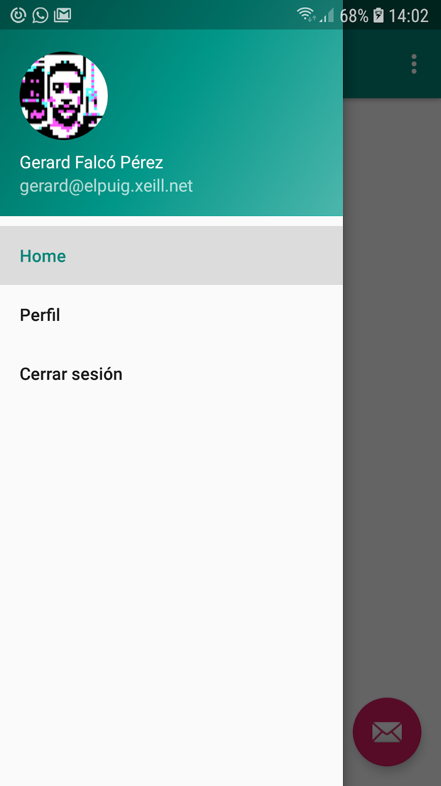
Para mostrar el perfil del usuario en el NavigationView (Drawer), tendremos que poner el código en la MainActivity, ya que es en ella donde esta el NavigationView.
Añade el siguiente código en el metodo
View header = navigationView.getHeaderView(0); final ImageView photo = header.findViewById(R.id.photoImageView); final TextView name = header.findViewById(R.id.displayNameTextView); final TextView email = header.findViewById(R.id.emailTextView); FirebaseAuth.getInstance().addAuthStateListener(new FirebaseAuth.AuthStateListener() { @Override public void onAuthStateChanged(@NonNull FirebaseAuth firebaseAuth) { FirebaseUser user = firebaseAuth.getCurrentUser(); if(user != null){ Glide.with(MainActivity.this) .load(FirebaseAuth.getInstance().getCurrentUser().getPhotoUrl().toString()) .circleCrop() .into(photo); name.setText(FirebaseAuth.getInstance().getCurrentUser().getDisplayName()); email.setText(FirebaseAuth.getInstance().getCurrentUser().getEmail()); } } });
10. SignOut
El SignOutFragment, es solamente un fragment "de paso" en el que se cierra la sesión, tanto de Google como de Firebase, y se vuelve al SignInFragment:
public class SignOutFragment extends Fragment { public SignOutFragment() { } @Override public View onCreateView(LayoutInflater inflater, ViewGroup container, Bundle savedInstanceState) { return inflater.inflate(R.layout.fragment_sign_out, container, false); } @Override public void onViewCreated(@NonNull View view, @Nullable Bundle savedInstanceState) { super.onViewCreated(view, savedInstanceState); GoogleSignIn.getClient(requireActivity(), new GoogleSignInOptions.Builder(GoogleSignInOptions.DEFAULT_SIGN_IN) .requestIdToken(getString(R.string.default_web_client_id)) .build()).signOut(); FirebaseAuth.getInstance().signOut(); Navigation.findNavController(view).navigate(R.id.signInFragment); } }